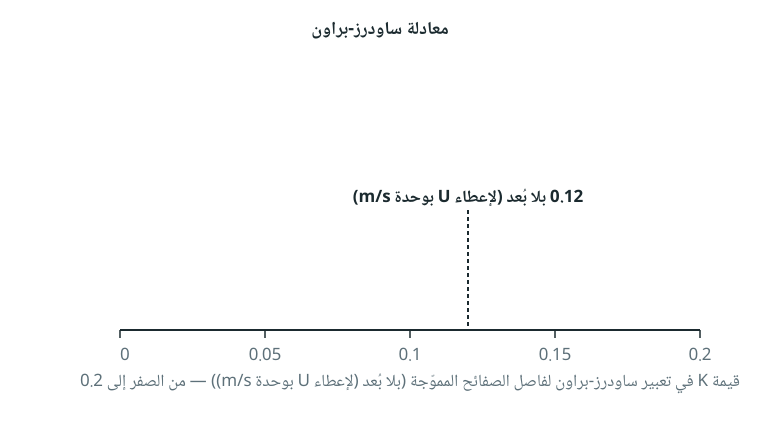

معادلة ساودرز-براون
Souders-Brown Equation
علاقة تعطي سرعة البخار القصوى المسموحة في برج تقطير أو عمود امتصاص بدلالة كثافة الطورين ومعامل سعة تجريبي، وهي أساس تحديد قطر العمود.
معادلة ساودرز-براون علاقة تجريبية تعطي سرعة البخار الظاهرية القصوى المسموحة في برج تقطير أو عمود امتصاص، وهي الخطوة الأولى في تحديد قطر العمود. صاغها ساودرز وبراون سنة 1934 بربط سعة أبراج التجزئة بسرعة استقرار القطرات السائلة: فحين تبلغ سرعة البخار الصاعد حدًّا يعجز عنده عن ترك القطرات تترسّب، تُحمل القطرات إلى أعلى ويبدأ الإغراق. وتُكتب العلاقة على صورة u = C·[(ρ_L − ρ_G)/ρ_G]^0.5، حيث u سرعة البخار الظاهرية وC معامل سعة تجريبي يعتمد على نوع الجهاز والمسافة بين الأطباق ونظام الخواص. ويُسمّى الحدّ C عند الإغراق معامل سعة الإغراق C_SB. ويُستعمل المعامل نفسه بصورة معمّمة في ارتباطات هبوط الضغط المعمّم للأعمدة المحشوّة، حيث يُعبَّر عن السعة بمعامل C-factor مبنيّ على السرعة الظاهرية والكثافة. والعلاقة لا تعطي سرعة تشغيل مباشرة: تُضرب سرعة الإغراق في نسبة تصميم أقل من الواحد، ثم يُحسب القطر من معدّل التدفّق الحجمي والسرعة المصحّحة.
كيف تعمل الظاهرة؟
الآلية موازنة قوى على قطرة سائلة معلّقة في تيّار بخار صاعد. تؤثّر على القطرة قوّة وزن صافية لأسفل تتناسب مع فرق الكثافتين، وقوّة سحب لأعلى تتناسب مع كثافة البخار ومربّع سرعته. وعندما تتساوى القوّتان تبلغ القطرة سرعة استقرارها؛ فإذا تجاوزت سرعة البخار هذه القيمة حُملت القطرة إلى أعلى. وبما أن سرعة الاستقرار تتناسب مع جذر النسبة بين فرق الكثافتين وكثافة البخار، جاءت العلاقة على صورة جذرية. والمعامل C يجمع في رقم واحد ما لم تُنمذجه الموازنة صراحةً: حجم القطرة وتوزيع أحجامها وتأثير هندسة الجهاز.
العلاقة بالأرقام
الصورة العامة: u = C·[(ρ_L − ρ_G)/ρ_G]^0.5. وفي مرجع بيري تُكتب لسرعة التصميم بين صفائح فاصل مموّج: U = K·[(ρ_l − ρ_g)/ρ_g]^0.5، بقيمة K = 0.12 لإعطاء U بوحدة m/s، أو 0.4 لإعطاء ft/s. وفي نموذج ستوبين يُعرَّف معامل السعة C_S = V_S·(ρ_v/Δρ)^0.5، ويُقاس عند الإغراق فيصير C_S,ult، ويُصحَّح عند معدّلات السائل المنخفضة بحدّ أعلى C_S,Limit = 0.8·C_S0. ويُستعمل المعامل نفسه في ارتباطات الأعمدة المحشوّة بوصفه C-factor مبنيًّا على مساحة المقطع الظاهرية للبرج.
مفاهيم متقاربة
التمييز الأول: العلاقة تعطي سرعة حدّية لا سرعة تشغيل؛ فالتصميم يضربها في نسبة أقل من الواحد، ويُختار القطر من معدّل التدفّق الحجمي. التمييز الثاني: معامل السعة في هذه العلاقة يخصّ جهازًا وشروطًا محدّدة، ولا يُنقل من جهاز إلى آخر بلا تحقّق؛ فقيمة 0.12 في مثال كاتز تخصّ فاصل صفائح مموّجة لا برج تقطير. التمييز الثالث: العلاقة أصل تاريخي لمعامل السعة المستخدم اليوم في ارتباطات السعة، لكنها ليست بديلًا عن ارتباط إغراق الحشوة الذي يعتمد على معامل الحشوة وهبوط الضغط.
حدود التطبيق
العلاقة تجريبية: معاملها C يُشتقّ من بيانات قياس، وقيمته تتغيّر بتغيّر نوع الجهاز والمسافة بين الأطباق ونظام الخواص، ولا توجد قيمة عامة صالحة لكل الحالات. وهي لا تعطي هبوط الضغط ولا تحقّق استقرار التشغيل، فعمود قد يكون تحت سرعة الإغراق ومع ذلك يعاني هبوط ضغط مفرطًا أو ترشّحًا عند الحمل المنخفض. وفي الأعمدة المحشوّة لا تكفي وحدها: يذكر مرجع بيري أن ارتباطات الإغراق وهبوط الضغط للحشوة يجب أن تُستعمل بحذر لأن انحرافاتها عن القياسات منتظمة لا عشوائية. كما أن العلاقة لا تنطبق على أنظمة راغية بلا معاملات تخفيض.

| الكمية | القيمة | المصدر |
|---|---|---|
| قيمة K في تعبير ساودرز-براون لفاصل الصفائح المموّجة | 0.12 بلا بُعد (لإعطاء U بوحدة m/s) | [1] |
| قيمة K نفسها بوحدات القدم والثانية | 0.4 بلا بُعد (لإعطاء U بوحدة ft/s) | [1] |
| مجال السرعات الذي لم تتغيّر عنده الكفاءة في تجارب كاتز | من 0.5 إلى 3 مضاعف من السرعة المحسوبة | [1] |
| تعريف معامل سعة الإغراق في نموذج ستوبين | C_S = V_S·(ρ_v/Δρ)^0.5 بلا بُعد | [2] |
المصادر
- 1 Equipment for Distillation, Gas Absorption, Phase Dispersion, and Phase Separation — Phase Separation (Eq. 14-226) — McGraw-Hill — Perry's Chemical Engineers' Handbook, 8th ed., Sec. 14 (2008). people.ysu.edu/~dmprice/CHEN%204887/Packed%20Bed%20flooding.pdf · اطُّلع عليه 2026-11-28
- 2 System Limit: The Ultimate Capacity of Fractionators (Stupin & Kister) — معامل السعة C_S وتعديله — IChemE — Distillation 2002 Proceedings (Institution of Chemical Engineers Symposium Series) (2002). skoge.folk.ntnu.no/prost/proceedings/distillation02/dokument/22-7.pdf · اطُّلع عليه 2026-11-28
استشهد بهذا المصطلح
الصيغتان مبنيتان من بيانات الصفحة نفسها: العنوان والتاريخ ورابط النسخة المنشورة.
معادلة ساودرز-براون — Souders-Brown Equation. (2026). ديوان المعرفة — انفراد. https://infiradev.com/diwan/terms/term-souders-brown-equation.html
@misc{term-souders-brown-equation2026,
title = {معادلة ساودرز-براون},
titleaddon = {Souders-Brown Equation},
howpublished = {{ديوان المعرفة — انفراد} — مرجع علمي عربي},
year = {2026},
url = {https://infiradev.com/diwan/terms/term-souders-brown-equation.html},
urldate = {2026-11-28},
note = {مراجعة علمية: Abdullah Al-Huwaidi}
}
راجعه: Abdullah Al-Huwaidi · 2026-11-28 · آخر تحديث 2026-11-28